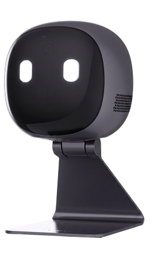

AI Turbo Engine
From product plan.
To first use.
My scope spans product planning, feature definition, UI/UX, and onboarding for an adaptive PC software experience.
Inside AI Turbo EngineHardware & Software Products · AI Solutions
I’m Joy Zhou. I lead complete hardware and software products from definition to launch, connecting AI capabilities, user experience, and business value.
Product definition, hardware, software, and AI solutions. The work, and my role behind it.
AI Turbo Engine
My scope spans product planning, feature definition, UI/UX, and onboarding for an adaptive PC software experience.
Inside AI Turbo Engine ThinkCentre X Tower
ThinkCentre X Tower
Sensor HubThinkCentre X Tower / Sensor Hub
My role connects 0-to-1 product definition with hardware–software experiences and an enterprise AI solution story.
Explore the product caseAI Client / Solution Architecture
I translate customer workflows into architecture, connecting models, software, hardware, and compute with scenario validation.
Decision Case / Product Practice
I develop reusable decision workflows, extend the team’s hardware strengths into software product practice, and explore developer needs through DCP.
Explore product practice15+ years across intelligent hardware, AI platforms, global launches, and enterprise customers.
Global desktop and AIPC planning, portfolio and lifecycle ownership. Led 0-to-1 product definition for ThinkCentre X Tower and Sensor Hub; expanded into AI Turbo Engine and AI Client solutions.
Built a video-image data platform from 0 to 1, standardizing project-based AI capability into one of the company’s three main product lines.
Led the Korea launch of WeFire across localization, version planning, R&D coordination, delivery, and operations analysis.
Samsung Security Systems and Baidu LBS KA: enterprise solutions, security integration, key accounts, and nationwide campaigns.
I bring hardware, software, AI, and go-to-market decisions into one product direction. These disciplines inform each other throughout the lifecycle.
Product portfolio, hardware definition, features, interfaces, and UI/UX. I connect engineering, onboarding, launch, and market feedback through the full product lifecycle.
Customer tasks, model fit, performance, and cost. I connect architecture, scenario validation, whitepaper structure, and customer-facing materials.
Beyond work